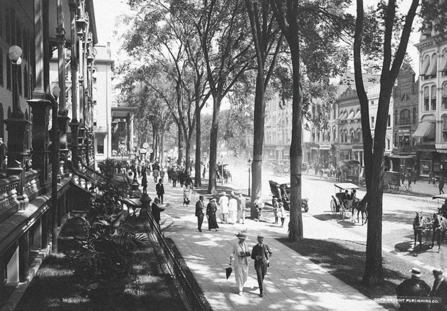
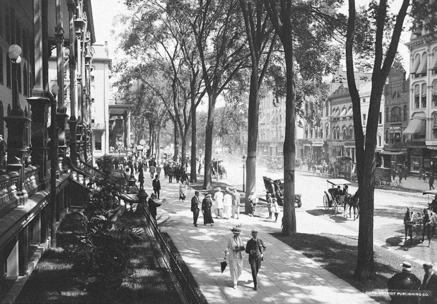

Stop paying monthly fees to big tech just to see your own photos. Derustify is the professional-grade photo restorer that runs 100% on your hardware. One payment. Yours forever.
Most apps rent you your own photos. We give you the tools to own them.
Remove decades of digital 'rust' and 'sandiness' instantly. We make blurry faces crisp again so you can see the person, not the pixels.
Breathe life back into black-and-white family history. Our AI understands your photos and adds colors that look real, not painted.
Don't do it one-by-one. Drop in a folder of 500 photos and let the app work through the night. Your computer does the work, you get the results.
Your family photos never leave your device. We don't have servers. We don't have accounts. Your private moments stay exactly where they belong: with you.
Built with high-performance technology that won't slow you down. No long uploads, no waiting lists. Just instant results on your screen.
We never touch your original files. Compare, tweak, and experiment freely knowing that your digital heirlooms are perfectly preserved.
Drag the slider to see how we peel back the years from these historic moments.
Restoring the grit and detail of 20th century life.
Bringing focus and color to iconic moments.
Iconic Dust Bowl portraits, restored for the next century.

Preserving the depth of historical struggle in color.
Louis Armstrong's 1946 dressing room, restored in vivid detail.
 

Bringing 1931 Broadway back in vivid, accurate color.
Everything you need to know about how we're different from the giants.
Because you shouldn't have to 'rent' software to look at your own photos. Modern companies use subscriptions to cover expensive cloud processing. Since Derustify runs on YOUR computer or phone, we have no server costs to pass on to you. You buy it, you own it. Period.
Yes. 100%. We physically cannot see your photos. All the AI magic happens inside your device's memory. No internet connection is required to restore images.
Derustify is built for modern Windows (10/11) and Android (8.0+). If you have a decent phone or a computer with a graphics card, it will be incredibly fast. If your device is older, it still works—it just takes a few extra seconds to 'clean' each photo.
The free version has all the power of the Pro version. We just add a small watermark to the corner of your exported images. Upgrading to Pro removes the watermark and unlocks batch processing for those large boxes of family photos in the attic.
Absolutely. It's the perfect gift for the family historian. Purchase it once, install it on the family PC, and spend an afternoon rescuing the family archives together.
No, the recolored images may have historical inaccuracies. The AI models are trained to restore color or to upscale images based on large samples of training data and often succeeds in correct output. Inaccurecies or inadequate coloring of images may occur, and Derustify does not gurarantee perfect results for all images.
Download Derustify today. Own the technology. Keep the memories.